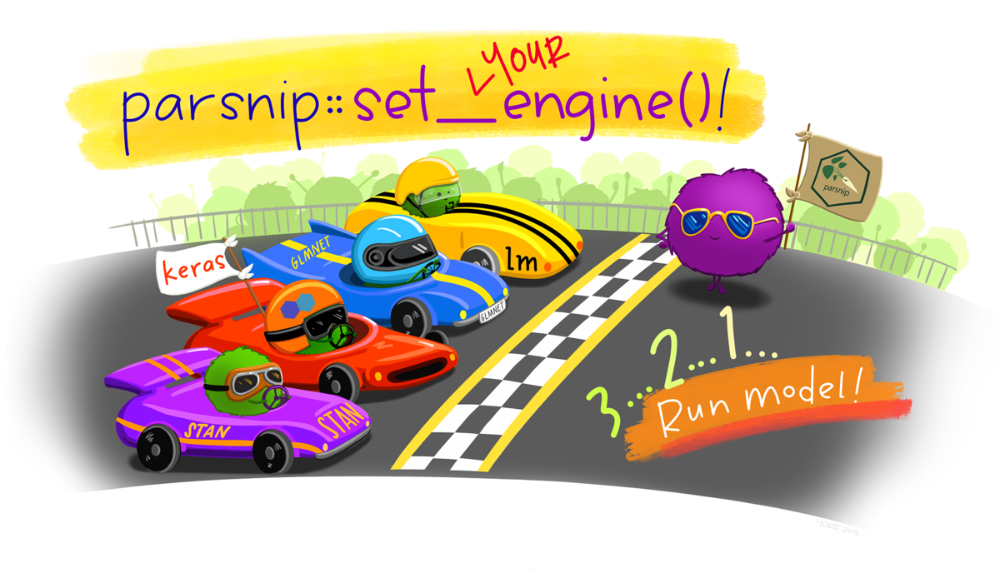
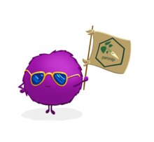

TIDYMODELS
The tidymodels framework is a collection of packages for modeling and machine learning using tidyverse principles.
Install tidymodels with:
install.packages("tidymodels")LEARN TIDYMODELS
Whether you are just starting out today or have years of experience with modeling, tidymodels offers a consistent, flexible framework for your work.

What do you need to know to start using tidymodels? Learn what you need in 5 articles, starting with how to create a model and ending with a beginning-to-end modeling case study.
After you are comfortable with the basics, you can learn how to go farther with tidymodels in your modeling and machine learning projects.

STAY UP TO DATE
Hear about the latest tidymodels news at the Posit open source blog.